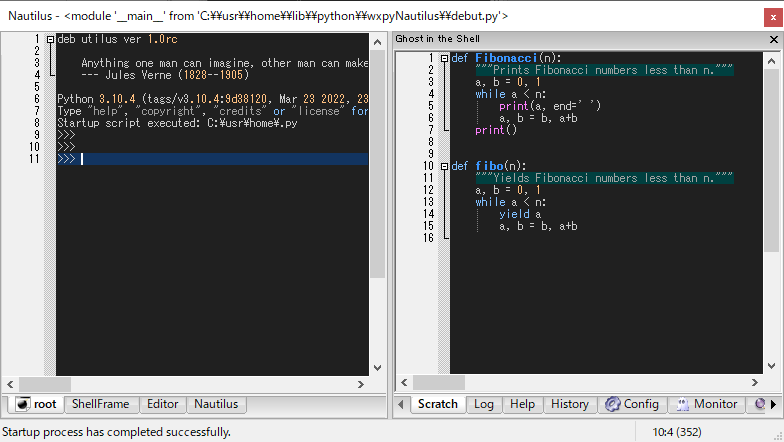

1. Configuration
1.1. ShellFrame
Nautilus consists of three notebook windows.

Console of the shell, a multi-page shells based on
wx.py.shell.ShellGhost in the shell, a helper window consists of multi-buffer editors, monitor, and inspector panes:
Eitors (Scratch, Log, Help, History, and Config)
Event monitor based on
wx.lib.eventwatcher.EventWatcherWidget inspector based on
wx.lib.inspection.InspectionToolGlobals and locals watcher
1.1.1. Scratch
Scratch window is a scratch notebook of code snippets similar to emacs *scratch* buffer.
You can open, close, and save the script file in the buffer.
1.1.2. Log
Log window is a logger of debugger and is used to view frames.
1.1.3. Help
Help window is a viewer of help string. Nautilus doesn’t display help text in the shell as normal interpreters, but piped them to the help buffer.
1.1.4. History
History window is used to display history of shells input. The history shows the actual command text pushed to the interpreter.
1.1.5. Monitor
Monitor window is used to display wx widgets events, based on wx.lib.eventwatcher.EventWatcher.
1.1.6. Inspector
Inspector window is used to display wx widgets tree, based on wx.lib.inspection.InspectionTool.
1.1.7. Config
Config window is for standalone stcript file (“debut.py”) that describes settings such as key bindings.
You can customize key bindings, colors, interfaces, magic syntax, and anything you can imagine here even at run-time. You can also debug the config code as well as Scratch. This could be an advanced topic.
Tip
You can customize the syntax overriding Nautilus.magic_interpret(tokens) in Config.
To see more details, press [f1] and read the docs or the source code by typing:
>>> self.shell.magic_interpret| @load
^ or press [f1] to read the docs.